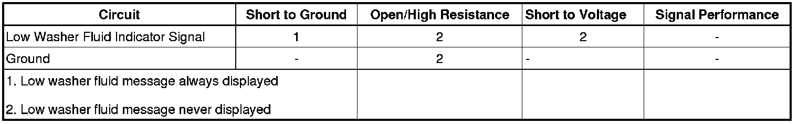

Low Washer Fluid Indicator Malfunction
Low Washer Fluid Indicator Malfunction
Diagnostic Instructions
* Perform the Diagnostic System Check - Vehicle (Initial Inspection and Diagnostic Overview) prior to using this diagnostic procedure.
* Review Strategy Based Diagnosis (Initial Inspection and Diagnostic Overview) for an overview of the diagnostic approach.
* Diagnostic Procedure Instructions (Initial Inspection and Diagnostic Overview)provides an overview of each diagnostic category.
Diagnostic Fault Information

Circuit/System Description
The Check Washer Fluid message is controlled by the instrument panel cluster using an input from the washer fluid level switch. The washer fluid level signal circuit is supplied ignition voltage through a resistor then monitored within the instrument cluster. The washer fluid level switch is normally open so the instrument cluster detects ignition voltage on the washer fluid level signal circuit whenever the washer fluid level is not low. When the washer fluid reaches the point where the driver should be informed that the washer fluid is low, the washer fluid level switch closes. When the washer fluid level switch is closed the washer fluid level signal circuit voltage is pulled low, and the instrument panel displays the Check Washer Fluid message on the driver information center. In order to prevent the Check Washer Fluid message from being displayed while sloshing is occurring in the washer fluid container, the instrument cluster is programed with a 1 minute delay before changing states of the Check Washer Fluid message during an ignition cycle.
Reference Information
Schematic Reference
Instrument Cluster Schematics (Instrument Cluster Schematics)
Connector End View Reference
Component Connector End Views (Connector Views)
Description and Operation
Wiper/Washer System Description and Operation (Wiper/Washer System Description and Operation)
Electrical Information Reference
* Circuit Testing (Component Tests and General Diagnostics)
* Connector Repairs (Component Tests and General Diagnostics)
* Testing for Intermittent Conditions and Poor Connections (Component Tests and General Diagnostics)
* Wiring Repairs (Component Tests and General Diagnostics)
Scan Tool Reference
Control Module References (Programming and Relearning)for Scan Tool Information
Circuit/System Verification
1. Verify the windshield washer fluid level is above the minimum level.
• If not above the minimum level, fill the reservoir and inspect for leaks.
2. Verify the scan tool IPC Washer Fluid Level parameter is OK.
Circuit/System Testing
1. Ignition OFF, disconnect the harness connector at the washer fluid level switch.
2. Test for less than 1 ohm of resistance between the ground circuit terminal A and ground.
• If greater than the specified range, test the ground circuit for an open/high resistance.
3. Ignition ON, verify the scan tool Washer Fluid Level parameter is OK.
• If not the specified value, test the signal circuit terminal B for a short to ground. If the circuit tests normal, replace the IPC.
4. Install a 3A fused jumper wire between the signal circuit terminal B and ground. Verify the scan tool Washer Fluid Level parameter is Low.
• If not the specified value, test the signal circuit for a short to voltage or an open/high resistance. If the circuit tests normal, replace the IPC.
5. If all circuits test normal, test or replace the washer fluid level switch.
Component Test
1. Ignition OFF, disconnect the harness connector at the washer fluid level sensor.
2. Washer fluid level switch open, test for infinite resistance between the signal terminal A and the ground terminal B.
• If not the specified value, replace the washer fluid level sensor.
3. Washer fluid level switch closed, test for less than 2 ohms of resistance between the signal terminal A and the ground terminal B.
• If not within the specified range, replace the washer fluid level sensor.
Repair Instructions
Perform the Diagnostic Repair Verification (Verification Tests) after completing the diagnostic procedure.
* Washer Solvent Container Level Sensor Replacement (Service and Repair)
* Control Module References (Programming and Relearning)for IPC replacement, setup, and programming